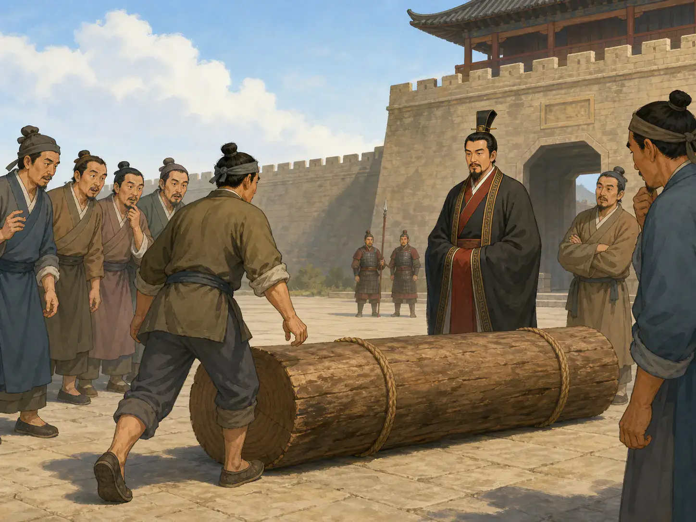
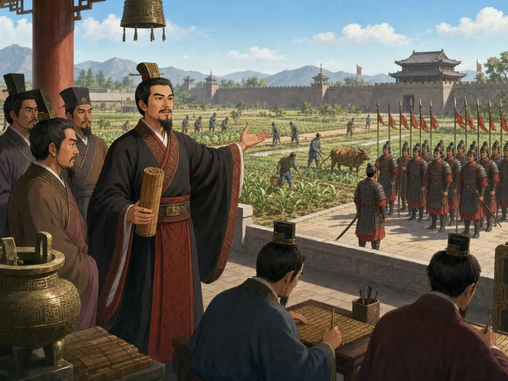

商鞅和那根没人敢搬的木头
Shang Yang and the Log No One Wanted to Move
Page 1
城门口的怪事
Something Strange at the City Gate

A man moves the log while the crowd watches.
两千三百多年前，中国还不是一个统一的国家，而是分成几个互相打仗的国家。秦国是其中一个。一百多年以后，秦国才会变成Qín Shǐhuáng · 建立秦朝、统一中国的第一位皇帝。统治的大帝国。
一天，秦国最大城市的南门外，出现了一根大木头。
旁边的牌子上写着：谁把木头搬到北门，就能得到十块金子。
人们围过来，盯着木头看。只是搬一根木头，就给这么多钱？一定有问题。也许这是个玩笑，也许搬完以后，根本拿不到钱。大家小声议论，却没有一个人动手。
于是，给的钱涨到了五十块金子。
终于，一个男子弯下腰，抱起木头，把它搬到了北门。Shāng Yāng · 战国时期在秦国推行变法的政治家。真的把钱给了他。围观的人一下子安静了。
这根木头送出的消息很简单：秦国很快会有新规矩，而商鞅说到就会做到。
More than 2,300 years ago, China was not yet one united country. It was divided into several kingdoms that often fought one another. Qin was one of them. It would be more than a hundred years before Qin became the great empire ruled by Qín Shǐhuáng · 秦始皇 · The First Emperor, who founded the Qin dynasty and united China..
One day, a great wooden log appeared outside the south gate of Qin's main city.
A notice beside it said, “Carry this log to the north gate, and you will receive ten pieces of gold.”
People gathered and stared. So much gold for moving one log? Something had to be wrong. Perhaps it was a joke. Perhaps the prize would disappear as soon as the work was done. Everyone whispered, but no one moved.
Then the prize rose to fifty pieces of gold.
At last, one man bent down, lifted the log, and carried it to the north gate. Shāng Yāng · 商鞅 · The Warring States reformer who changed laws and government in Qin. really paid him. The crowd suddenly became very quiet.
The log had carried a simple message. New rules were coming to Qin, and Shang Yang meant what he said.
Page 2
秦国想变得更强
Qin Wanted to Become Stronger
把木头放在城门口的人就是商鞅。他从另一个国家来到秦国，因为秦国的统治者正在寻找能帮助秦国变强的人。
秦国常常要和别的国家打仗。统治者需要更多粮食养活军队，也需要知道哪里有土地、哪里有人可以当兵。
商鞅提出，官员应该记录每一户人家：家里住着谁，又耕种多少土地。这样，秦国就更容易收粮食和钱，也更容易召集士兵。
他还建议奖励种出很多粮食的人，以及在战场上立功的士兵。一个人即使没有有钱有势的亲友，也可能靠种粮或打仗得到土地和更高的职位。
秦国的统治者同意让商鞅试一试。城门口的木头，就是商鞅让百姓相信这些新规矩的第一步。
The man behind the log was Shang Yang. He had come to Qin from another kingdom because Qin's ruler was looking for someone who could help make Qin stronger.
Qin often fought against other kingdoms. Its ruler needed more grain to feed the army. He also needed to know where people lived, who farmed each piece of land, and which men could be called to fight.
Shang Yang said officials should record every household: who lived there and how much land the family farmed. These records made it easier for Qin to collect grain and money and to call men into the army.
He also wanted to reward people who produced a great deal of grain and soldiers who did well in battle. Even someone without rich or powerful relatives might earn land or a higher rank through farming or fighting.
Qin's ruler agreed to let Shang Yang try. The log at the city gate was Shang Yang's first step in convincing people that the new rules were real.
Page 3
新规矩走进每一户人家
The New Rules Reached Every Home

Farmers grow food while rows of soldiers train nearby.
商鞅的新规矩很快影响了秦国的每一户人家。官员来到村庄，记录家里的人和耕种的土地。政府奖励收获很多粮食的家庭，也奖励打胜仗的士兵。
商鞅还让相邻的几户人家组成一组。如果有人准备犯罪，邻居必须报告。邻居明明知道却不说，也可能一起受罚。
这些办法让秦国更容易收取粮食、召集士兵和执行命令。粮仓里的粮食增加了，军队也越来越强。
可是，百姓受到的管束也更多了。新制度可能给一个家庭带来奖励，也可能因为一个人的行为让整组邻居挨罚。商鞅的办法给一些人带来了新的机会，也给许多家庭带来了很大的压力。
Shang Yang's new rules soon affected every household in Qin. Officials came to villages and recorded the people who lived there and the land they farmed. The government rewarded families that harvested plenty of grain. It also rewarded soldiers who won battles.
Shang Yang placed neighboring households into small groups. If someone was planning a crime, the neighbors had to report it. Neighbors who knew but said nothing could be punished too.
These rules made it easier for Qin to collect grain, gather soldiers, and carry out orders. More grain filled the storehouses, and the army grew stronger.
But families were also watched more closely. The new system might reward one family, while a whole group of neighbors could be punished for one person's actions. Shang Yang's system gave new chances to some people and placed heavy pressure on many others.
Page 4
商鞅想逃，却逃不出去
Shang Yang Tried to Escape

The innkeeper points to the rule and will not let Shang Yang in.
许多年后，一直保护商鞅的秦国统治者去世了。他的儿子成为新统治者。新统治者还是王子的时候，曾经违反商鞅的法律。商鞅不能直接惩罚王子，就惩罚了负责教导他的两个人。商鞅的改革也夺走了许多贵族原有的权力，所以宫里有不少人恨他。
不久，有人指控商鞅准备反抗新统治者。新统治者下令抓他。商鞅并不是不想逃，而是想逃却没有成功。
天黑了，他来到一家旅店门口，想住一晚。
“你的通行证呢？”旅店老板问。通行证是一张写着旅客身份的官方文件。
商鞅没有通行证。老板摇摇头：“商鞅定的规矩说，没有通行证的人不能住店。要是我让你进去，我也会被罚。”
老板不知道，站在门外的这个人就是商鞅。
商鞅继续逃跑，可邻国也不肯收留他。他回到秦国自己的封地，召集人马反抗。秦军很快打败并杀死了他。
商鞅想逃。他只是没有逃成功。
Many years later, the ruler who had protected Shang Yang died. The ruler's son took his place. When the new ruler was still a prince, he had broken one of Shang Yang's laws. Shang Yang could not punish the prince directly, so he punished two men who were responsible for teaching him. Shang Yang's reforms had also taken power away from important families, so he had many enemies at court.
Soon, those enemies accused Shang Yang of planning to rebel. The new ruler ordered his arrest. Shang Yang did not choose to stay. He tried to escape, but he could not get away.
Night fell, and he came to an inn. He asked for a room.
“Where is your travel pass?” the innkeeper asked. A travel pass was an official paper showing who a traveler was.
Shang Yang had no pass. The innkeeper shook his head. “Shang Yang's rule says I cannot take a guest without one. If I let you in, I will be punished too.”
The innkeeper did not know that the man outside was Shang Yang himself.
Shang Yang kept running, but a neighboring kingdom would not allow him to stay. He returned to his own land in Qin, gathered fighters, and rebelled. Qin's army quickly defeated and killed him.
Shang Yang wanted to escape. He simply did not succeed.
人走了，规矩还在
The Man Was Gone, but the Rules Stayed
新统治者杀了商鞅，却保留了他的许多办法。官员继续记录每户住着哪些人、耕种哪些土地。种出很多粮食的家庭和打胜仗的士兵仍然会得到奖励，违反命令的人也继续受到严厉惩罚。
一百多年以后，秦国打败了另外六个国家，秦始皇建立了中国第一个大帝国。商鞅没有活到那一天，也不是秦国胜利的唯一原因。但他设计的制度帮助秦国收集更多粮食、召集更多士兵，也让统治者更严密地控制百姓。
故事开始时，商鞅用一根木头告诉大家：新规矩会认真执行。多年以后，旅店老板把门关在商鞅面前。那一刻，商鞅自己的规矩也管到了他自己。
The new ruler killed Shang Yang but kept many of his ideas. Officials continued to record who lived in each household and what land each family farmed. Families that grew plenty of grain and soldiers who won battles could still earn rewards. People who broke the rules still faced strict punishments.
More than a hundred years later, Qin defeated six other kingdoms, and Qin Shi Huang created China's first great empire. Shang Yang did not live to see that day, and he was not the only reason Qin won. But his system helped Qin collect more grain, call up more soldiers, and control its people more closely.
At the beginning of the story, Shang Yang used a log to show everyone that the new rules would be enforced. Years later, an innkeeper closed the door on Shang Yang himself. His own rules now applied to him too.